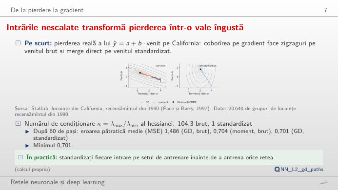
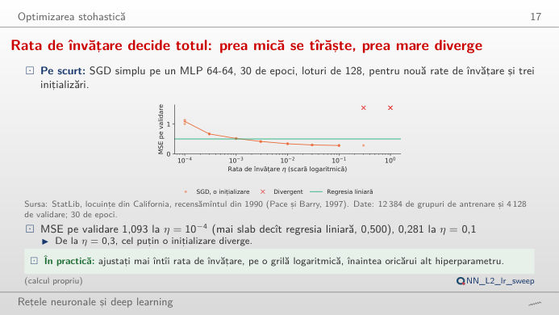
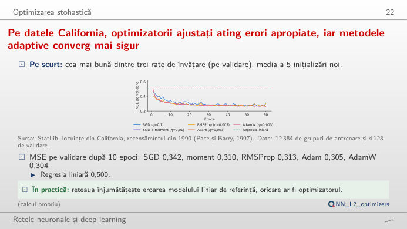
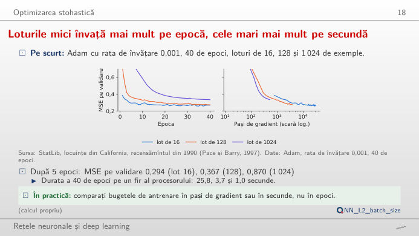
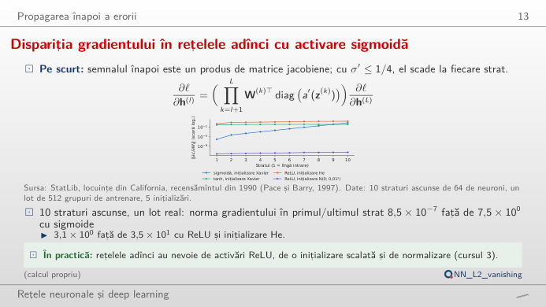

În stînga este slide-ul din curs, în dreapta aceeași figură, recalculată în browser din datele cursului cînd modificați un control. Butonul ▶ modifică parametrul principal pas cu pas. Sub fiecare figură: o sinteză numerică, o întrebare pentru sală și Quantlet-ul cu codul figurii. Primul bloc rulează coborîrea pe gradient chiar în browser, pe o regresie reală; celelalte reiau antrenările din curs.
Coborîrea pe gradient și rata de învățare · Optimizatori și mini-loturi · Rețele adînci: gradienți care se sting
Coborîrea pe gradient și rata de învățare
Intrările nescalate transformă pierderea într-o vale îngustă

Răspuns
Cele două direcții ale văii au curburile λmax = 38,8 și λmin = 0,37 (numărul de condiționare 104): pasul trebuie să rămînă sub 2/λmax ca să nu diveargă (încercați 2,05 × 1/λmax), iar la acest pas direcția plată este parcursă de 104 ori mai încet. După 60 de pași, MSE este încă 1,486, față de un minim de 0,701. Momentul (β = 0,9 cu jumătate din pas) acumulează partea constantă a gradientului și ajunge la 0,704. Standardizarea face valea rotundă (numărul de condiționare 1,0): un singur pas de 1/λmax ajunge în minim.
Efectul ratei de învățare asupra antrenării

Răspuns
η = 0,1 dă cea mai mică MSE pe validare, 0,281 (regresia liniară ajunge la 0,500). Un pas mai sus, la η = 0,3, două din cele trei inițializări diverg, iar la η = 1 diverg toate trei. O rată prea mică este lentă, nu greșită: la η = 0,0001, MSE este încă între 1,005 și 1,142 după 30 de epoci. Rata cea mai bună stă chiar sub limita de divergență; de aceea testele de rată parcurg η pe o scară logaritmică.
Optimizatori și mini-loturi
Pe datele California, optimizatorii ajustați ating erori apropiate, iar metodele adaptive converg mai sigur

Răspuns
În cadrul aceluiași optimizator, rata contează mai mult: Adam termină la 0,288 cu η = 0,0003 și la 0,259 cu η = 0,003; SGD termină la 0,307 cu η = 0,01 și la 0,274 cu η = 0,1. La ratele lor cele mai bune, cei cinci optimizatori termină aproape unul de altul (MSE pe validare între 0,259 și 0,274) și toți depășesc regresia liniară (0,500); Adam și AdamW ajung acolo mai repede (0,299 după 10 epoci, față de 0,350 pentru SGD) și cu o dispersie mai mică între inițializări. Pe setul de test, Adam nu este semnificativ mai bun decît SGD (t pereche = 1,01, p = 0,37, 5 inițializări).
Efectul dimensiunii lotului: progresul pe epocă și pe secundă

Răspuns
Pe epocă cîștigă lotul de 16 (MSE pe validare 0,294 după 5 epoci, față de 0,367 pentru 128 și 0,870 pentru 1.024), pentru că face 774 de pași pe epocă în loc de 97 sau 13. Pe pas de gradient, lotul mare este cel puțin la fel de bun: fiecare pas al său mediază mai multe exemple. Pe secundă, imaginea se schimbă din nou: cele 40 de epoci au durat 25,8 s cu lotul de 16, 3,7 s cu 128 și 1,0 s cu 1.024 pe acest laptop. Cu aceeași rată de învățare, lotul mare nu a convers după 40 de epoci (0,335); loturile mari cer de obicei o rată de învățare mai mare.
Rețele adînci: gradienți care se sting
Dispariția gradientului în rețelele adînci cu activare sigmoidă

Răspuns
De aproximativ 10⁷ ori (8,5 × 10⁻⁷ față de 7,5; media a 5 inițializări pe un lot de 512 grupuri de locuințe): fiecare strat sigmoid înmulțește semnalul propagat înapoi cu cel mult 0,25, deci primele straturi abia învață. Cu tanh și Xavier, raportul rămîne în jur de 0,6, iar cu ReLU și inițializarea He gradientul rămîne de același ordin în toate straturile. Ponderile mici N(0; 0,01²) micșorează semnalul în ambele sensuri (gradienți de 10⁻¹² la adîncimea 10), ponderile mari N(0; 1) îl fac să explodeze (peste 10¹⁶ la adîncimea 10, depășire numerică dincolo de ea). Modificați adîncimea: problema crește geometric cu numărul de straturi.
Date: locuințele din California (StatLib, recensămîntul din 1990; 20.640 de grupuri de locuințe), împărțite 60/20/20 cu sămînța 20261108, ca în curs (analysis_L2.py): 12.384 de grupuri de antrenare, 4.128 de validare și 4.128 de test. Rețele: perceptron multistrat (MLP) cu două straturi ascunse de cîte 64 de neuroni ReLU (unitate liniară rectificată), eroarea pătratică medie (MSE) pentru valoarea mediană a locuințelor în 100.000 USD; SGD = coborîre stocastică pe gradient, RMSProp = propagarea rădăcinii mediei pătratice, Adam = estimarea adaptivă a momentelor.